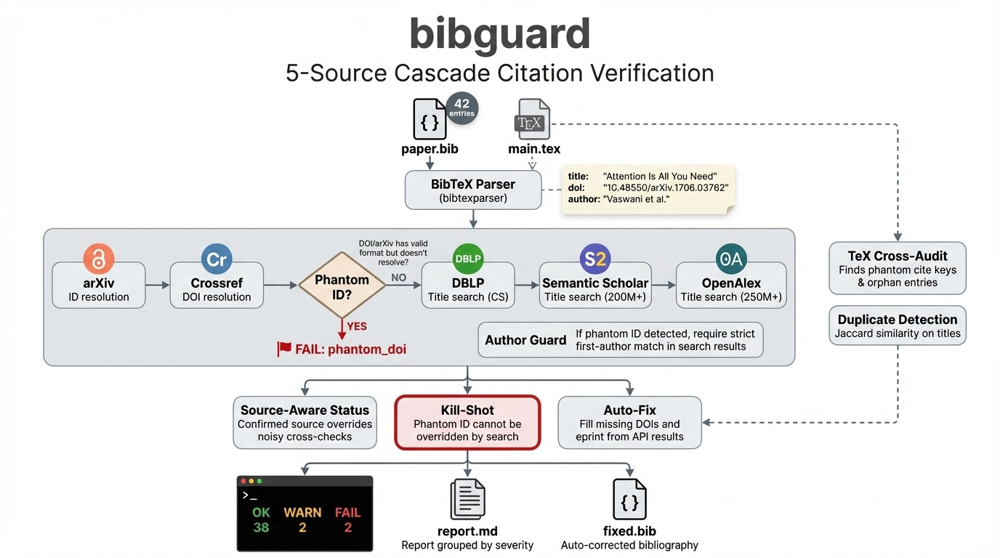

One command to detect hallucinated, broken, and retracted citations in your paper.
bibguard v0.2.0 paper.bib — 42 entries [ 1/42] vaswani2017attention ✅ crossref, dblp [ 2/42] he2016resnet ✅ crossref, s2 [ 3/42] fake_quantum_paper ❌ no match [ 4/42] wakefield1998mmr ⚠️ crossref ... [42/42] brown2020gpt3 ✅ s2, openalex ────────────────────────────────────────────────── ✅ 38 ⚠️ 2 ❌ 2 (42 entries in 67.3s) FAIL entries: ❌ fake_quantum_paper — phantom_doi ❌ halluc_gpt_ref_7 — verification ──────────────────────────────────────────────────

Queries arXiv, Crossref, DBLP, Semantic Scholar, and OpenAlex. Falls back gracefully across sources.
Catches DOIs and arXiv IDs that look valid but don't resolve — the strongest hallucination signal.
A phantom ID cannot be overridden by a similar search result. No false negatives on fabricated identifiers.
Find \cite{key} with no .bib entry, and orphan entries that are never cited.
Generates a corrected .bib with missing DOIs and eprint IDs filled in from API results.
Core needs only requests + bibtexparser. Optional RapidFuzz for better matching.
58-case golden test set with known hallucinated, retracted, chimera, and real papers. Reproduce it yourself.
| Category | Metric | Result |
|---|---|---|
| Hallucinated (14 fabricated) | Detected as FAIL | 14/14 (100%) |
| Chimera (5 mixed-metadata) | Detected as ≥ WARN | 5/5 (100%) |
| Real papers (10 legitimate) | False positive (FAIL) | 1/10 (10%) |
| Retracted (28 retractions) | Any issue flagged | 19/28 (68%) |
| Runtime | 58 entries | 95s (~1.6s/entry) |
No API keys required. All queries respect rate limits.
Ships with skill definitions for major AI coding assistants.
/bibguard paper.bib
/bibguard paper.bib
auto-triggered on .bib
bibguard --json
bibguard handles L0 (existence & metadata verification). For semantic NLI, citation intent classification, graph anomaly detection, and Bayesian risk scoring, see IntegriRef — the full L0-L4 verification stack.